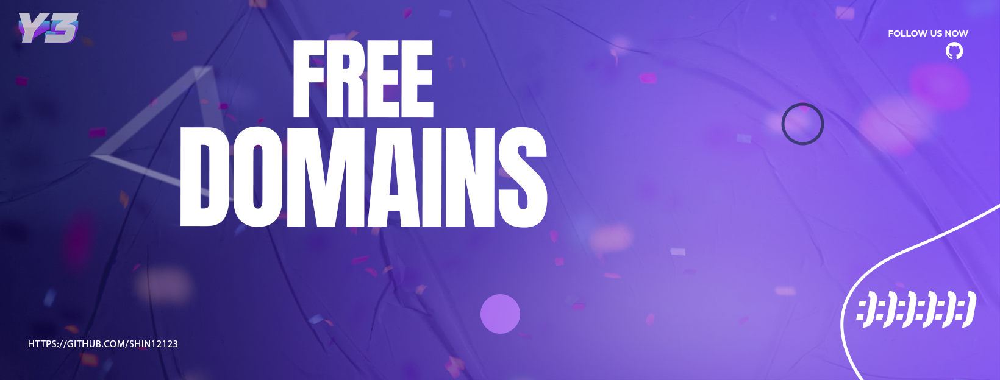

Фішинг у соціальних мережах — це популярний метод, коли шахраї створюють фальшиві акаунти або надсилають повідомлення з посиланнями на підроблені сайти. Найчастіше це виглядає як виграш, термінова акція або прохання допомоги від "друга".
Фішинг посилань — це підробка URL-адрес.
Увага: не переходьте за підозрілими посиланнями!
Приклад підробленого банеру:

Фішинг у соціальних мережах — це популярний метод, коли шахраї створюють фальшиві акаунти або надсилають повідомлення з посиланнями на підроблені сайти. Найчастіше це виглядає як виграш, термінова акція або прохання допомоги від "друга".